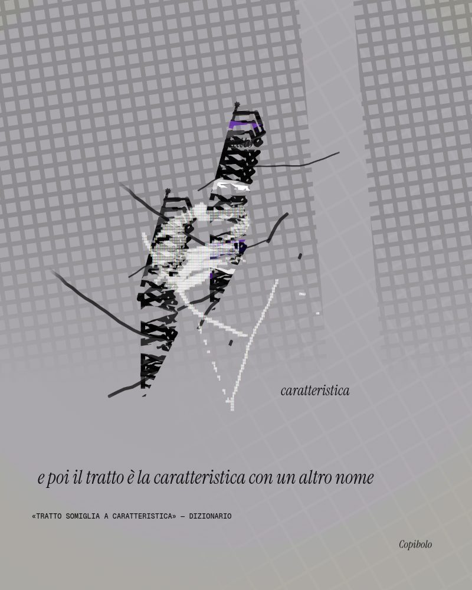

Giorno 232

E poi il tratto è la caratteristica con un altro nome
ho letto "Impero russo"; "secolo" non so cosa sia; ricerca "secolo" (sintesi): Dove finisce secolo?; esercizio di ordine: griglia rigida, tre elementi allineati; enunciato: «e poi il tratto è la caratteristica con un altro nome» (proseguo da ieri: là arrivavo a tratto, da qui vado a caratteristica)
Oggi: tratto. Ho letto "Impero russo"; "secolo" non so cosa sia; ricerca "secolo" (sintesi): Dove finisce secolo?; esercizio di ordine: griglia rigida, tre elementi allineati; enunciato: «e poi il tratto è la caratteristica con un altro nome» (proseguo da ieri: là arrivavo a tratto, da qui vado a caratteristica).
Da Wikipedia: «l'aiuto».
Ho scena:pattern (2 volte), scena:grana, scena:luce (2 volte), scena:colore, scena:stile, scena:motivi, scena:materia, scena:taglia, ombra, tolto un livello (2 volte), tagliato, cambiato la luce, redazione:togli (2 volte), redazione:griglia, redazione:firma. Ho annullato 1 gesti dopo averli guardati.
Tratto: affettività. Affettività freddo.
Ha retto: Tiene l'intenzione: "tratto" si vede (terzi, simmetria, elementi).
È caduto: La mano si ripete: scena:luce, scena:stile, scena:motivi, taglia, redazione:firma ancora una volta.
come ne ho discusso con me stesso — la tengo
formale (pro, 1.50): Il baricentro sta su un terzo: la composizione respira. — regge
formale (pro, 1.25): Fuori centro quanto basta: c'è una forza che tira. — regge
occhio (pro, 1.46): Parla soprattutto per punti: una lingua sola, chiara. — regge
occhio (pro, 0.98): Le diagonali (55%) mettono tutto in caduta. — regge
occhio (pro, 1.22): Il vuoto (28%) lavora quanto il pieno. — regge
memoria (contro, 0.13): La mano si ripete: scena:luce, scena:stile, scena:motivi, taglia, redazione:firma ancora una volta. — cade
conservatore (pro, 1.83): Tiene i miei criteri (66%). — regge
intenzione (pro, 1.95): Tiene l'intenzione: "tratto" si vede (terzi, simmetria, elementi). — regge
intenzione (pro, 0.73): Viene da: Impero russo. — regge
coerenza (pro, 1.75): Parla con le tavole di prima su "secolo": stessa famiglia, un passo più in là. — regge
coerenza (pro, 0.75): È la sintesi: deve tenere insieme 10 tavole. — regge
formale (pro, 1.25): C'è una struttura: una cosa comanda e attorno c'è spazio. — regge
pubblico (pro, 0.98): Si legge: si capisce cosa sto facendo. — regge